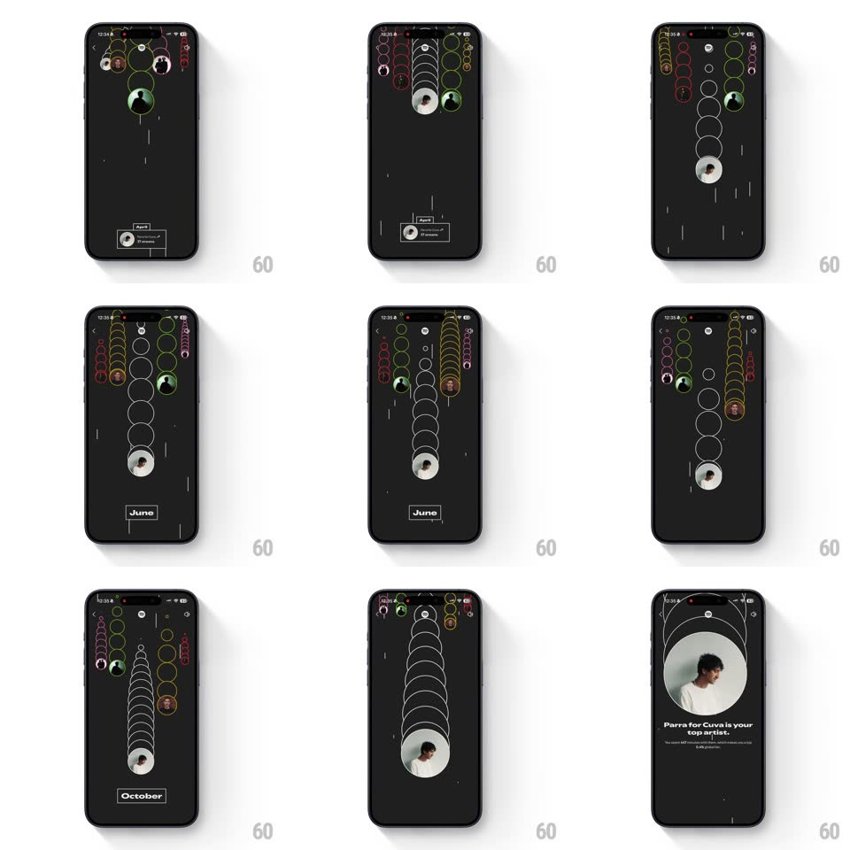

Media
Frame-by-frame

Rebuild this animation 1:1: Spotify Wrapped's artist race - five artists climb vertical lanes leaving trails of ring echoes while months tick by, until the winner's lane floods white and morphs into the recap card.

Rebuild this animation 1:1: Spotify Wrapped's artist race - five artists climb vertical lanes leaving trails of ring echoes while months tick by, until the winner's lane floods white and morphs into the recap card.
## Integration
Integration: stack-agnostic spec - springs given as stiffness/damping, timed motions as duration + curve; map every value to your framework and animation library of choice.
## Scene
A black Wrapped story. Intro card: "And these 5 were extra special." over the spiral with artist portraits, a "But who claimed the top spot?" teaser and a green Play button. The race: five vertical lanes of outlined rings, each artist's avatar climbing with a comet trail of ring echoes, a month chip (April, June, October) advancing at the bottom. Finale: "Parra for Cuva is your top artist." under a big circular portrait with the minutes line.
## Motion spec
Pattern: vertical race with trailing ring echoes morphing into the recap card.
- The intro's spiral portraits collapse upward into their lanes (matched-geometry: each portrait rises and shrinks into its lane's starting ring, 500ms, staggered 80ms).
- The race runs on surges: each avatar climbs in springy hops (translateY, spring ~300/14), stamping a ring echo at each vacated position - the echoes persist, building a visible trail per lane in that lane's color.
- The month chip flips forward (April -> June -> October, vertical roll, 180ms) as the race progresses; leaders change at least twice.
- The winner's final surge floods its lane: the echoes fill solid white ring by ring (60ms per ring, bottom-up) while the avatar expands.
- The full lane then morphs: rings converge into the finale's big portrait circle (scale + position interpolation, 450ms) as "is your top artist." and the stats fade up beneath (100ms apart).
## Calibration
- Trails are the history of the race - never let echoes fade out mid-run.
- The month chip is the clock - it must advance visibly, not skip.
## Reduced motion
Crossfade intro to finale (400ms); skip the race.
## Don't miss
- Only the winner's lane turns solid - the other four stay outlined echoes.
- The recap copy is second-person ("is your top artist"), matched to the finale portrait.